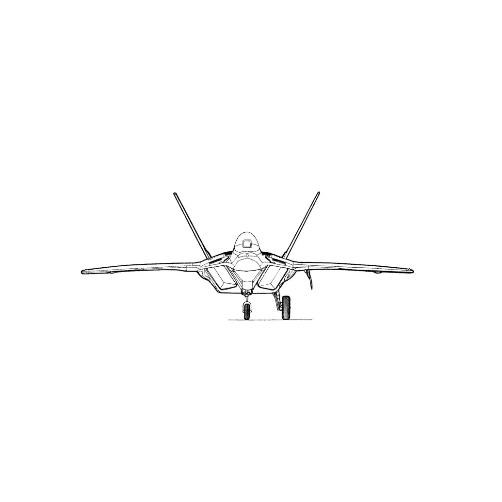
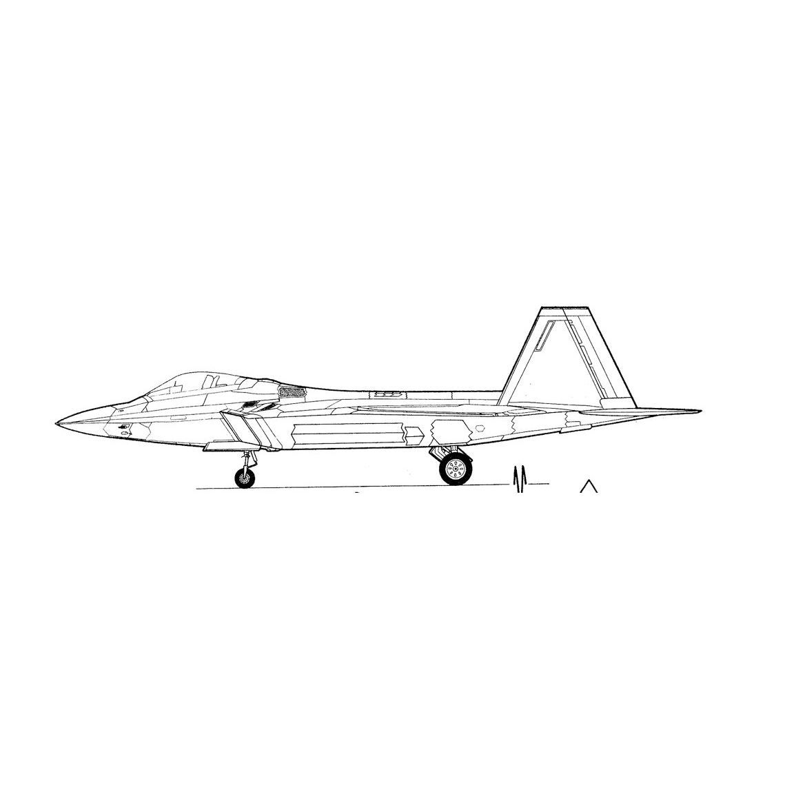
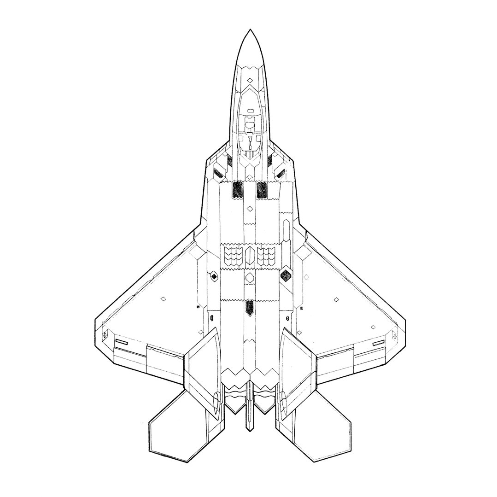
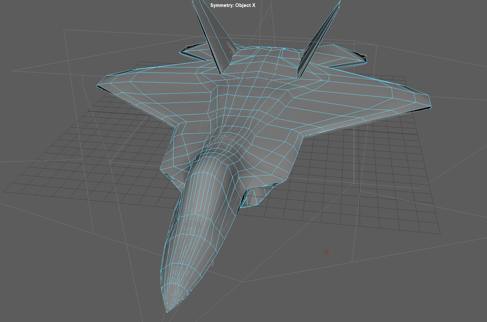
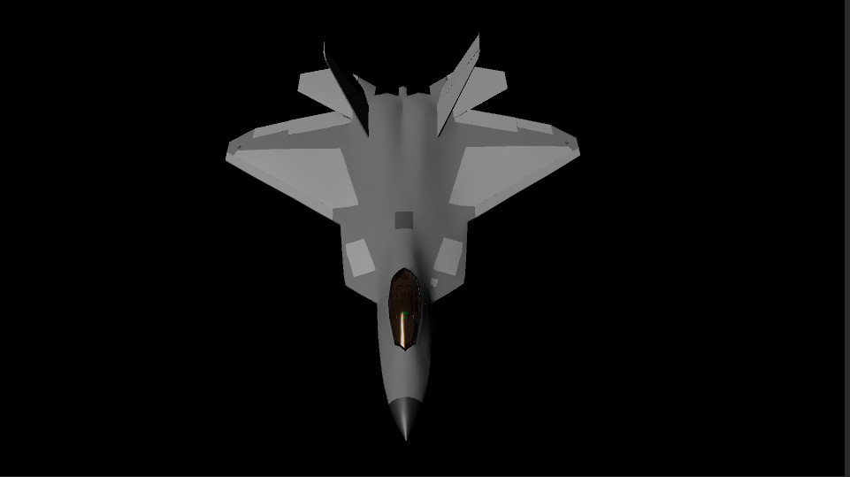
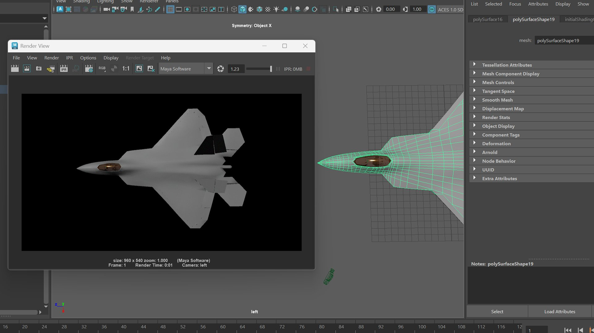
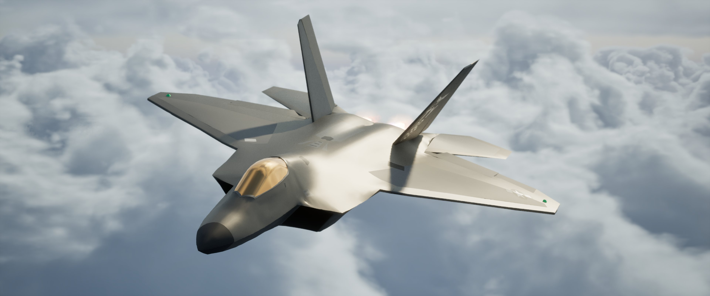
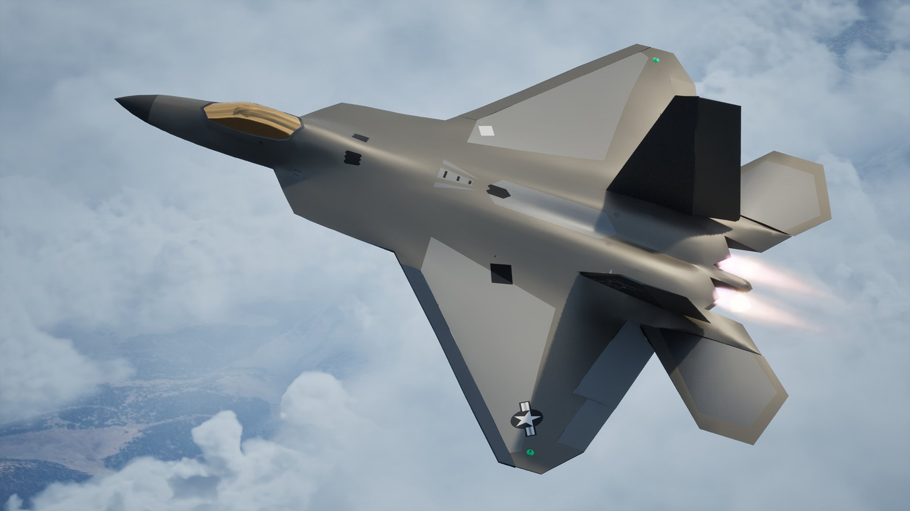
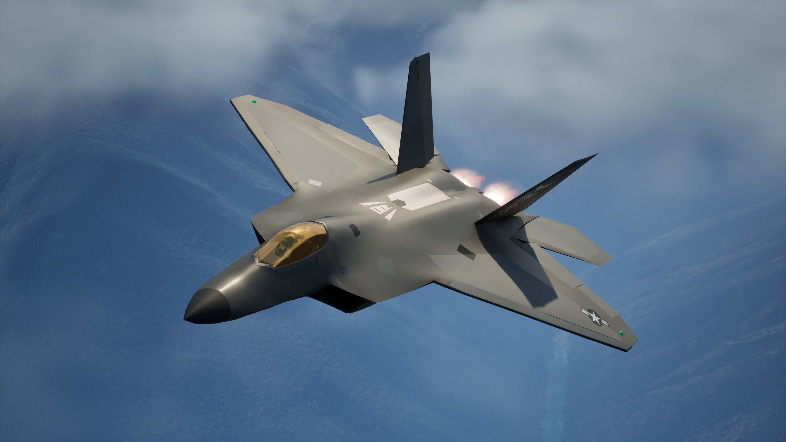
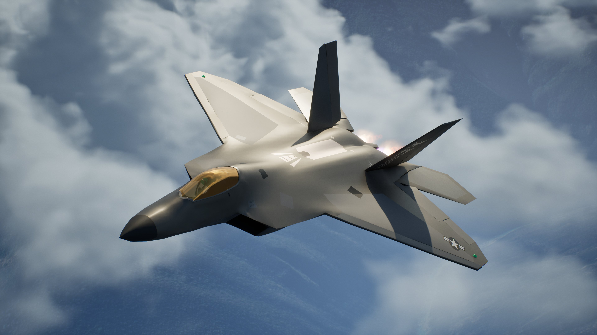

3D Modeling an Aircraft
A Lockheed Martin F-22 Raptor, poly-modeled from blueprints and rendered over real terrain data.
For this project I decided to 3D model a military aircraft in Maya using poly modeling techniques. The chosen subject was the Lockheed Martin F-22 Raptor — a technically complex aircraft with a highly specific aerodynamic silhouette. I used multiple reference images and orthographic blueprints to accurately capture proportions, panel lines, and surface detail.
Translating 2D blueprints into a 3D model was the hardest part technically — the references helped with understanding the curves and compound surfaces. Blueprints were aligned inside Maya as image planes to serve as modeling guides, and the plane was built with polygon modeling starting from the fuselage and working outward to the wings, fins, and engine intakes.



After the initial model was completed in Maya, it went through critique before moving into texturing. I used Substance Painter to build up texture layers, including the characteristic grey stealth finish, panel wear, heat discoloration around the engine exhausts, and surface markings. Those texture maps were exported into Unreal Engine for final material adjustment and rendering.
To give the renders a convincing real-world context, the landscape was set up with a 3D map projection via Cesium, placing the aircraft over actual terrain data. The sky and cloud system used the Ultra Dynamic Sky blueprint for dynamic, realistic atmospheric conditions, with decals applied to the jet's surface for added realism.






